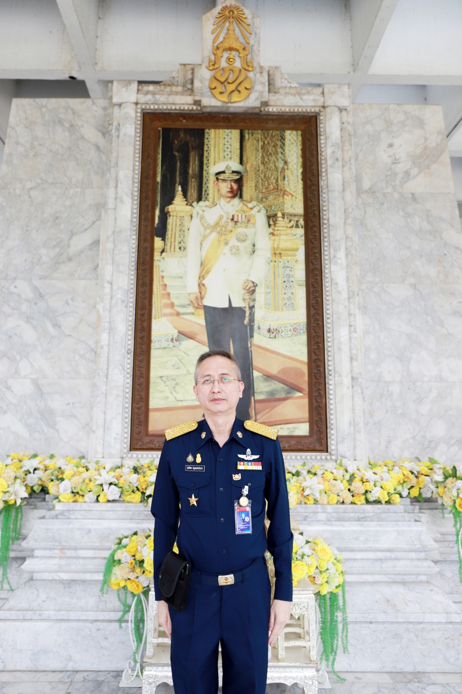
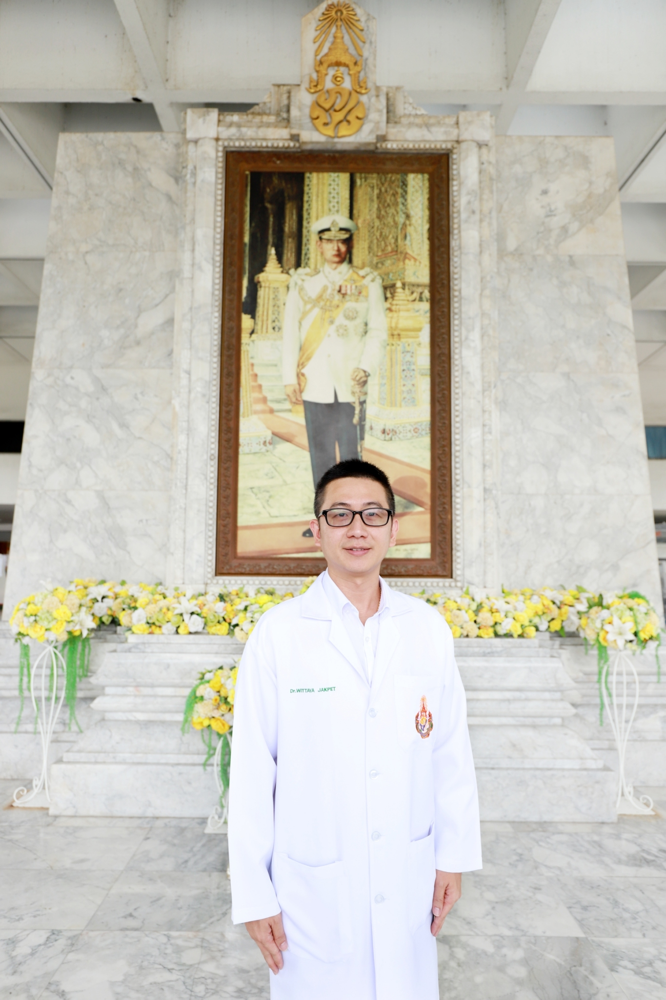
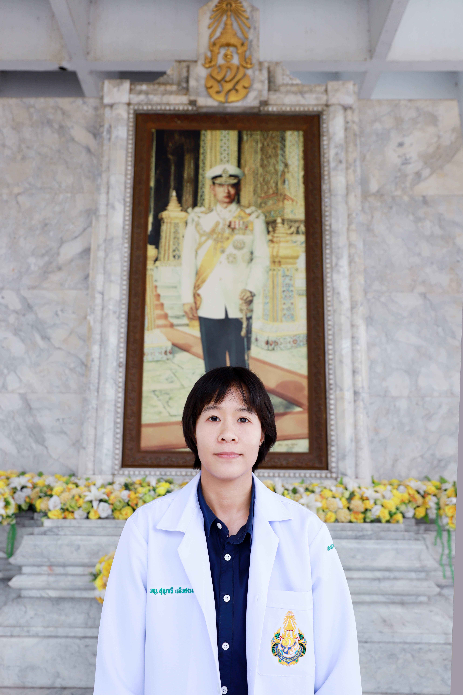
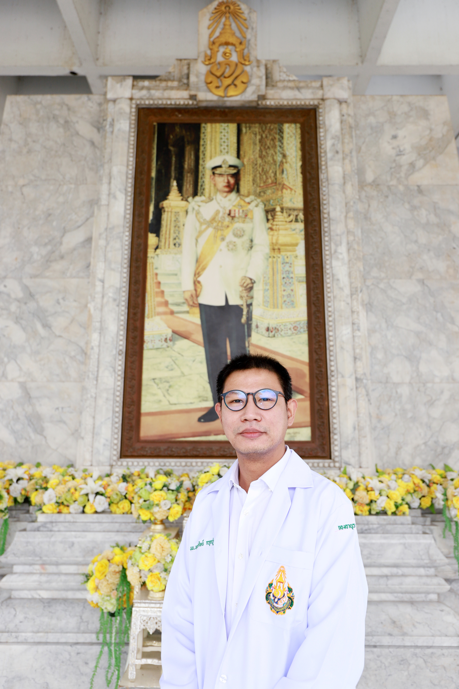

กองอายุรกรรม
โรงพยาบาลภูมิพลอดุลยเดช กรมแพทย์ทหารอากาศ
BHUMIBOL ADULYADEJ HOSPITAL
Login
|
|
A
A
A
หน้าแรก
หน่วยงาน
รพ.ภูมิพลอดุลยเดช พอ.
ปณิธาน
พันธกิจ
วิสัยทัศน์
กองอายุรกรรม รพ.ภูมิพลอดุลยเดช พอ.
ประวัติ
พันธกิจ
วิสัยทัศน์
ภารกิจ ขอบเขตความรับผิดชอบ และหน้าที่สำคัญ
รายนามผู้อำนวยการ
บุคลากร
สาขาวิชา
อายุรศาสตร์โรคหัวใจและหลอดเลือด (Cardiology)
อายุรศาสตร์โรคไต (Nephrology)
อายุรศาสตร์โรคระบบทางเดินอาหาร (Gastroenterology)
อายุรศาสตร์โรคต่อมไร้ท่อและเมตะบอลิสม (Endocrinology and Metabolic disorders)
อายุรศาสตร์โรคระบบการหายใจและเวชบำบัดวิกฤต (Pulmonary and Critical care medicine)
อายุรศาสตร์ประสาทวิทยา (Neurology)
อายุรศาสตร์โรคติดเชื้อ (Infectious disease)
อายุรศาสตร์โรคเลือด (Hematology)
อายุรศาสตร์มะเร็งวิทยา (Oncology)
อายุรศาสตร์โรคข้อ และรูมาติสซั่มและภูมิแพ้ (Allergy, Immunology, and Rheumatology)
โภชนศาสตร์คลินิก (Clinical Nutrition)
ตจวิทยา (Dermatology)
พิษวิทยา (Toxicology)
จิตเวชศาสตร์ (Psychiatry)
การศึกษา
การศึกษาก่อนปริญญา
การศึกษาหลังปริญญา
วิชาการ
งานวิจัย
งานประชุม
E-learning
Excellence Center
ศูนย์ความเป็นเลิศด้านโรคสมอง
ศูนย์ความเป็นเลิศด้านโรคไต
ศูนย์ความเป็นเลิศด้านโรคมะเร็ง
คลีนิค
ในเวลาราชการ
นอกเวลาราชการ
ดาวน์โหลด
LINK
ค้นหา
หน้าแรก
/สาขาวิชาอายุรศาสตร์โรคหัวใจและหลอดเลือด
อายุรศาสตร์โรคหัวใจและหลอดเลือด (Cardiology)
หน่วยมีขีดความสามารถในการตรวจ วิเคราะห์ และรักษาแบบพิเศษเฉพาะโรค ดังนี้
CCU care and invasive monitoring
Cardioversion and Defibrillation
Tilt table test
Cardiac rehabilitation
Heart Failure Clinic
Temporary and permanent cardiac pacing
Continuous EKG monitoring (Holter monitor)
Exercise stress test
2D and M-mode Echocardiography
3D Echocardiography
Transesophageal Echocardiography
Dobutamine/exercise stress Echocardiograhy
Electrophysiology study with radiofrequency ablation , CIED implantation
Cardiac catheterization
Percutaneous transluminal coronary angioplasty (PTCA), other cardiac intervention
อาจารย์พิเศษ

พล.อ.ท.ธนวิตต สกุลแสงประภา
วว.อายุรศาสตร์
วว.อายุศาสตร์หัวใจและหลอดเลือด
ประกาศนียบัตรอนุสาขาหัตถการปฏิบัติรักษาโรคหัวใจและหลอดเลือด
พล.อ.ต.วรงค์ ลาภานันต์
วว.อายุรศาสตร์
วว.อายุศาสตร์หัวใจและหลอดเลือด
ประกาศนียบัตรอนุสาขาหัตถการปฏิบัติรักษาโรคหัวใจและหลอดเลือด
น.อ.หญิง พัชรินทร์ ค้าของ
วว.อายุรศาสตร์
วว.อายุศาสตร์หัวใจและหลอดเลือด
น.อ.กฤษฎา ศาสตรวาหา
วว.อายุรศาสตร์
วว.อายุศาสตร์หัวใจและหลอดเลือด
ประกาศนียบัตรอนุสาขาหัตถการปฏิบัติรักษาโรคหัวใจและหลอดเลือด
น.อ.เกรียงไกร จิรสิริโรจนากร
น.อ.ชวลิต ดังโกสินทร์

น.อ.วิทยา จักรเพ็ชร์
อาจารย์แพทย์
น.ต.ปัญญภัทร์ เจียมโพธิ์ (หน.หน่วย)
น.ท.หญิง ประจงจิตร์ แช่มสอาด
น.ต.หญิง มนัสวี อินทรพินทุวัฒน์
ประวัติการทำงาน
ร.อ.ศรัณยู สุทธิพงศ์เกียรติ์

ร.ท.หญิง สุญาณี แม้นสงวน

อ.นพ.พลรังศิษย์ กรุดภู่
«
<
1
2
3
>
»
แผนกอายุรกรรม โรงพยาบาลภูมิพล
ข่าวกิจกรรม
ประชาสัมพันธ์
ประกาศ
ตารางเวรแพทย์
ตารางเวรแพทย์ในเวลา
ตารางเวรแพทย์นอกเวลา
ดาวน์โหลด
แบบฟอร์ม 1
แบบฟอร์ม 2
© โรงพยาบาลภูมิพลอดุลยเดช กรมแพทย์ทหารอากาศ All Rights Reserved
171 กองอายุรกรรมชั้น 4 อาคาร คุ้มเกล้า โรงพยาบาลภูมิพลอดุลยเดช แขวงคลองถนน เขตสายไหม กทม. 10220
e-mail: